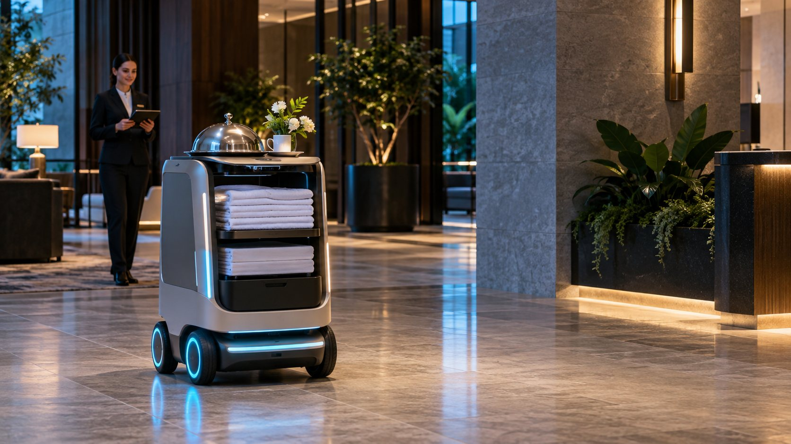
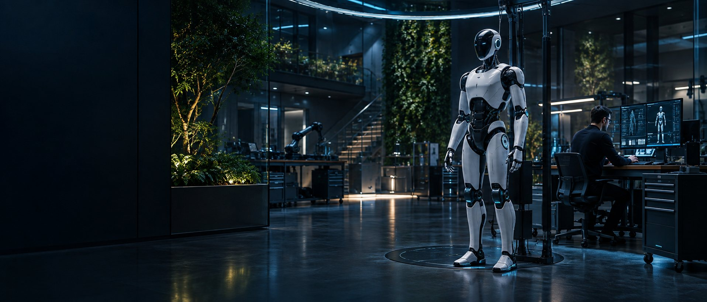
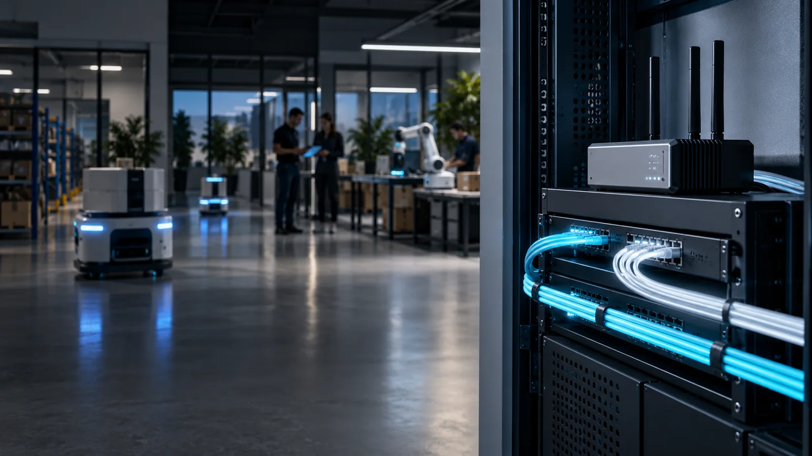

01 / Robotique
Accueillir, livrer, nettoyer ou accompagner.
Cinq familles de robots pour trouver l’usage adapté à vos espaces.
Voir les robots ↗
Robotique · IA · Télécoms
Des robots, une IA locale et des communications professionnelles pour simplifier votre quotidien.
Nous vous accompagnons pour choisir une solution adaptée à vos besoins et définir sa mise en place.

Cinq familles de robots pour trouver l’usage adapté à vos espaces.
Voir les robots ↗Une IA locale pour vos documents, avec des démonstrations par métier.
Voir les démonstrations ↗
Téléphonie, Internet, Wi-Fi et cloud : vos communications réunies.
Voir les offres ↗01 / Échanger
La tâche à simplifier, les personnes et les équipements concernés.
02 / Choisir
Usages, contraintes, faisabilité et budget.
03 / Préparer
Installation, prise en main et suivi selon le périmètre convenu.